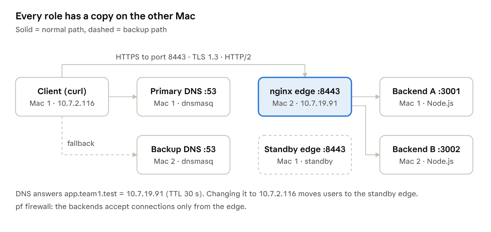
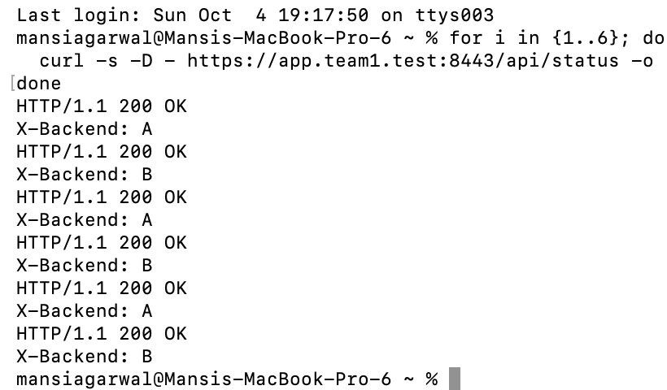
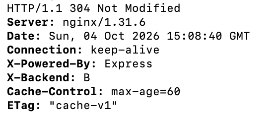
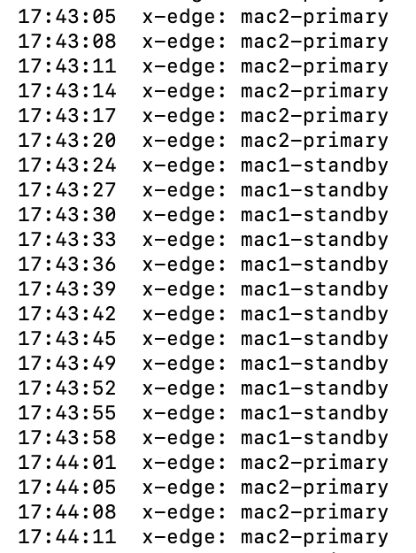
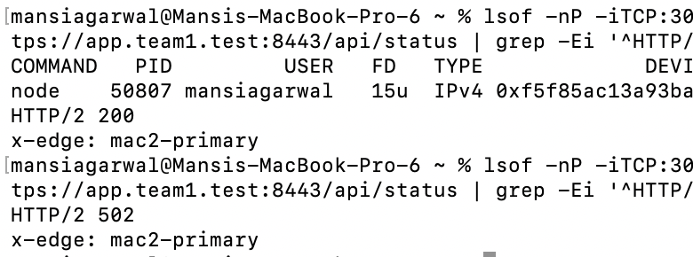
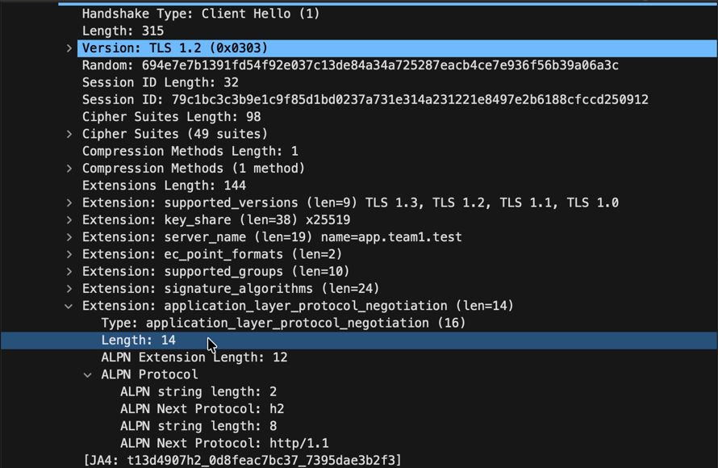

Abstract—We built a small private web service on two MacBooks connected to one campus Wi-Fi network. In Phase 1, one Mac ran a private DNS server and one backend; the other Mac ran an nginx reverse proxy that serves HTTPS on port 8443 and shares requests between two backends. We proved every layer with evidence: DNS, ping, a verified TLS 1.3 certificate, load balancing, HTTP caching with a 304 response, and Wireshark captures of DNS, TCP and TLS. In Phase 2 we made the service keep working when parts fail. We added a backup DNS server, a 30-second DNS TTL, firewall rules that hide the backends, automatic backend failover, and a standby proxy reached by changing one DNS record. Every test passed. The site kept returning HTTP 200 when one DNS server, one backend or the main proxy was removed, and it gave a clear 502 error only when both backends were down. One limit remains: the campus firewall blocks incoming DNS (port 53) on Mac 1.
Index Terms—DNS, dnsmasq, TTL, nginx, reverse proxy, load balancing, TLS 1.3, HTTP/2, HTTP caching, high availability, failover, packet filter, Wireshark.
A web service that users reach by name, over an encrypted connection, from more than one server, depends on five protocols working together: DNS finds the server, TCP carries the data, TLS protects it, HTTP carries the request, and a reverse proxy picks a backend. Each part is simple alone. The challenge in this project was to make them work together on two real machines, and to prove each step with evidence [1].
The project had two phases. Phase 1 built the service and showed that every layer works. Phase 2 asked a harder question: does the service still work when something breaks? For Phase 2 we added six extensions (A to F): a backup DNS server, TTL control, service isolation with a firewall, backend failover, a standby proxy, and layer-by-layer troubleshooting.
We used the reserved .test domain, so no public DNS or public certificate authority is involved. All configuration files, scripts and evidence are in our GitHub repository [2].
Two MacBooks share the network roles (Fig. 1). In Phase 1 each role ran once. In Phase 2 every role except the client has a copy on the other Mac. The client never talks to a backend directly: it resolves the name, connects to nginx, and nginx chooses a backend for each request.
Both Macs use the Wi-Fi interface en0. DHCP gave them new addresses between the phases, so all Phase 2 files use the new IPs; Phase 1 files keep the old IPs to match the Phase 1 evidence. In Phase 2 the subnet mask is 255.255.224.0 (/19) and the gateway is 10.7.0.1.
| Machine | IP (Phase 1 / 2) | Roles |
|---|---|---|
| Mac 1 (Mansi) | 10.7.21.182 / 10.7.2.116 | Primary DNS (dnsmasq, :53), Backend A (:3001), test client; Phase 2: standby nginx (:8443) |
| Mac 2 (Tanisha) | 10.7.21.206 / 10.7.19.91 | nginx edge (HTTPS :8443), Backend B (:3002); Phase 2: backup DNS (:53) |
app.team1.test over UDP port 53 and gets the edge address.X-Backend; nginx returns it over TLS.| Layer | Use in our system |
|---|---|
| Application | DNS (dnsmasq); HTTP/2 client to nginx; HTTP/1.1 nginx to backends |
| Security | TLS 1.3, self-signed certificate for app/api.team1.test |
| Transport | UDP 53 (DNS); TCP 8443, 3001, 3002 |
| Network | IPv4 on one /19 subnet; pf firewall (Phase 2) |
| Link | Wi-Fi (en0); ARP |
dnsmasq on Mac 1 answered for app.team1.test and api.team1.test with the edge address, and forwarded all other names to 1.1.1.1 and 8.8.8.8. Both names point to the edge, not to a backend, so every request enters through the proxy. A local query returned NOERROR with the authoritative flag set. The same name sent to Google DNS (8.8.8.8) returned NXDOMAIN, which proves the name exists only in our private DNS. Ping worked in both directions with 0% loss (average 109.5 ms and 126.7 ms on the busy campus Wi-Fi).
One test failed: Mac 2 could not query the DNS server on Mac 1 (A3). The university-managed firewall drops incoming traffic to port 53 on Mac 1, and only the IT team can change it. We reported this honestly as a limitation and solved it in Phase 2 (Section V).
Both backends are small Express (TypeScript) servers. Each one adds the header X-Backend: A or B, so we can see which one answered. nginx on Mac 2 listens with TLS on port 8443, holds an upstream group with both backends, and forwards every path with proxy_pass. It also adds the Host, X-Real-IP, X-Forwarded-For and X-Forwarded-Proto headers, because TLS ends at nginx.
We tested HTTPS with curl -v and never used -k, so certificate checking stayed on. The result was TLS 1.3 with the cipher CHACHA20-POLY1305, a certificate for CN=app.team1.test whose name matched, “SSL certificate verify ok”, and HTTP 200.
Six requests in a row were answered A, B, A, B, A, B (Fig. 2). nginx uses round-robin by default, so one name reaches both machines. Capacity and availability are decided at nginx, and the client does not see it.

app.team1.test:8443, all 200, served alternately by Backend A and B.The endpoint /api/cache sends Cache-Control: max-age=60 and ETag: "cache-v1". For 60 seconds a client may reuse its copy without asking the server. After that, it sends the ETag back in If-None-Match. If nothing changed, the server answers 304 Not Modified with headers only and no body (Fig. 3). The first answer came from Backend A and the 304 from Backend B; both use the same ETag, so this works with load balancing.

If-None-Match: the server returns 304 Not Modified with the same ETag and no body.We stopped Backend A. All six next requests still returned 200, from Backend B. The nginx error log showed connect() failed (61: Connection refused) for Backend A: nginx tried A, was refused, and passed the request to B. After we restarted A, it joined the rotation again without any change to nginx.
We captured three layers in Wireshark. DNS was captured on the loopback interface of Mac 1, because the client and dnsmasq ran on the same machine; the answer came in 281 µs. TCP was captured on Mac 2 with the filter tcp.port == 8443 and showed the three-way handshake SYN, SYN-ACK, ACK from client port 53258 [4].
TLS 1.3 encrypts the server certificate, so it cannot be seen in a normal capture [6]. To show it, we repeated the request with TLS 1.2 forced (curl --tlsv1.2 --tls-max 1.2). Wireshark then showed the Certificate message (type 11), 834 bytes, with app.team1.test in its bytes. In the normal TLS 1.3 session, everything after the Server Hello was “Application Data”, which proves the HTTP request and response were encrypted.
Before adding new features, we fixed the problems that Phase 1 left (Table III).
| Problem in Phase 1 | Fix in Phase 2 |
|---|---|
address= in dnsmasq always sends TTL 0 | host-record=name,ip,30 and local-ttl=30 |
Old /etc/hosts lines gave two A records | Lines removed; no-hosts added |
| Cross-machine DNS (A3) blocked on Mac 1 | Backup DNS on Mac 2; Mac 1 queries Mac 2 |
| No health-check settings in nginx | max_fails=1 fail_timeout=10s, proxy_next_upstream |
| Backend B code missing from the repo | Restored; files grouped per machine and phase |
| IPs changed on the new network | All Phase 2 configs updated |
Cross-machine DNS now works: from Mac 1, dig @10.7.19.91 app.team1.test returns NOERROR, the answer 10.7.19.91 with TTL 30, and SERVER: 10.7.19.91#53. We also added a .gitignore so the TLS private key is never pushed to GitHub.
All six extensions worked (Table IV). For each one we set it up, broke something on purpose, and saved the result.
| Ext. | Test | Result |
|---|---|---|
| A | Stop primary DNS | Names resolve via Mac 2; site 200 |
| B | Change DNS record | Old answer until 17:43:24; flush skips wait |
| C | Reach a backend directly | Times out; edge path still works |
| D | Kill Backend A | 8 of 8 requests 200 via B |
| E | Point DNS at Mac 1 | Traffic moves to mac1-standby |
| F | Real fault in backup DNS | Wrong listen-address found, fixed |
Mac 2 runs a second dnsmasq with the same records. Mac 1 uses 127.0.0.1 first and 10.7.19.91 second. When we stopped the primary, dig @127.0.0.1 gave “connection refused”, but normal lookups still returned the edge address and the site still returned HTTP/2 200. A client simply tries the next server in its list, so a second DNS server removes a single point of failure.
Every record now has a TTL of 30 s [8]. A loop on Mac 1 printed the X-Edge header every 3 s while we changed the record to Mac 1. The client kept the old, cached answer until 17:43:24, then switched to the standby (Fig. 4). When we changed it back, we flushed the macOS cache and the client switched at once, at 17:44:01. TTL is the longest time a change can take to reach a client: a short TTL means fast changes but more DNS queries.

We used the macOS packet filter (pf) with our own anchor com.apple/team1, so system rules were never changed. Mac 2 blocks port 3002 on en0; Mac 1 allows port 3001 only from the edge (10.7.19.91) and blocks everyone else. From Mac 1, a direct connection to port 3002 timed out, but the site through the edge still worked. The rule counters showed 3 packets blocked on Mac 2, and 30 packets passed and 0 blocked on Mac 1. After rollback, the direct connection worked again. A firewall drop causes a timeout, not “connection refused”. nginx reaches Backend B through 127.0.0.1, which does not use en0, so the rule does not affect it.
Each backend is listed with max_fails=1 fail_timeout=10s, and proxy_next_upstream retries a failed request on the other backend (at most 2 tries) [9]. When we stopped Backend A, 8 of 8 requests returned 200 from B, and the error log had only one “Connection refused” line. These are passive health checks: nginx marks a backend as down after one real request fails, and skips it for 10 s.
A standby nginx on Mac 1 uses the same certificate and the same backends, and adds X-Edge: mac1-standby. We first tested it directly with curl --resolve (HTTP/2 200, A and B balanced), then moved users to it by changing one DNS record on both DNS servers (Fig. 4). The same certificate works on both edges because it is bound to the name, not to the IP address.
During testing, dig @10.7.19.91 timed out. We checked one layer at a time: ping worked, so the network was fine; dnsmasq was not running; its config held Mac 1's listen-address, and with bind-interfaces dnsmasq cannot listen on an IP it does not own. Restoring the correct file fixed it. Our method is: ping → dig → nc -vz → openssl s_client → curl -v → logs.
We broke the system in four ways (Table V). Each failure gives a different symptom, and the symptom points to the broken layer.
| Failure | What the client saw | Layer |
|---|---|---|
| Wrong DNS record (10.7.19.99) | Wrong IP; curl timed out after 5 s | DNS data |
| Wrong DNS server (8.8.8.8 only) | No answer for team1.test | DNS server |
| Both backends down | HTTP/2 502 from the edge | Application |
| Wrong port (9443) | Ping works; “Connection refused” | Transport |
Timed out means no reply: no host has that IP, or a firewall dropped the packet. Connection refused means the host is there but nothing listens on that port; it sends back a TCP reset. 502 Bad Gateway means TLS and nginx work but no backend answered (Fig. 5). The edge log showed one request trying both backends: first 127.0.0.1:3002, then 10.7.2.116:3001, both refused.

A capture on Mac 2 shows a full request from Mac 1: DNS, TCP, TLS 1.3 and encrypted HTTP/2 [7], [10]. We saved only the 85 team packets (filter ip.addr==10.7.2.116 && (dns.qry.name contains "team1" || tcp.port==8443)), so no other users' traffic is stored.
| Step | What we see |
|---|---|
| DNS | A app.team1.test → 10.7.19.91, TTL 30, about 5 ms [3] |
| TCP | SYN → SYN, ACK → ACK; MSS 1460, window scale 64 |
| TLS start | Client Hello, SNI app.team1.test, ALPN h2, http/1.1 |
| TLS reply | Server Hello, TLS 1.3, TLS_CHACHA20_POLY1305_SHA256 |
| Data | Only “Application Data” records |
| Close | FIN, ACK from both sides at once |
Each curl received a new ephemeral client port (57337, 57338, 57339), while the server port stayed 8443, so each connection is a different socket pair. Wireshark shows Seq=0, but this is relative; the real first number is random. MSS 1460 is the 1500-byte frame minus 20 bytes of IP and 20 bytes of TCP header. The flags SYN, ECE, CWR mean the client offered ECN [5].
The Client Hello says “TLS 1.2 (0x0303)” for compatibility with old devices; the real version is chosen in the supported_versions extension, and the Server Hello picks TLS 1.3 (Fig. 6). The name (SNI) and the HTTP version (ALPN) are sent in clear text, which is how nginx picks the right certificate.

server_name=app.team1.test, supported_versions with TLS 1.3, and ALPN offering h2 and http/1.1.In the cloud these roles map to managed services: DNS with health checks, a load balancer with active health checks, security groups instead of pf, and a certificate from a public authority.
Phase 1 built a private web service on two real Macs and proved each layer: private DNS, HTTPS with a verified certificate, load balancing, HTTP caching and packet captures. Phase 2 made it survive failures: a stopped DNS server, a stopped backend and a moved edge all left the site working, and only the loss of both backends gave an error, a clear 502. The main lessons are simple. Every role needs a copy on another machine. TTL decides how fast a change reaches users. A firewall drop looks like a timeout, while a closed port looks like “connection refused”. When something breaks, check one layer at a time.
[1]Computer Networks Course, “CN Project Document (Phase 1 and Phase 2),” Newton School of Technology, Rishihood University, 2026.
[2]M. Agarwal and T. Dhiman, “CN_Project_Elite,” GitHub repository, 2026. [Online]. Available: https://github.com/Aggarwalmansi/CN_Project_Elite
[3]P. Mockapetris, “Domain names—Implementation and specification,” RFC 1035, IETF, Nov. 1987.
[4]W. Eddy, Ed., “Transmission Control Protocol (TCP),” RFC 9293, IETF, Aug. 2022.
[5]K. Ramakrishnan, S. Floyd, and D. Black, “The addition of Explicit Congestion Notification (ECN) to IP,” RFC 3168, IETF, Sep. 2001.
[6]E. Rescorla, “The Transport Layer Security (TLS) protocol version 1.3,” RFC 8446, IETF, Aug. 2018.
[7]M. Thomson and C. Benfield, Eds., “HTTP/2,” RFC 9113, IETF, Jun. 2022.
[8]S. Kelley, “dnsmasq manual page.” [Online]. Available: https://thekelleys.org.uk/dnsmasq/docs/dnsmasq-man.html
[9]nginx, “Module ngx_http_upstream_module.” [Online]. Available: https://nginx.org/en/docs/http/ngx_http_upstream_module.html
[10]Wireshark Foundation, “Wireshark User’s Guide.” [Online]. Available: https://www.wireshark.org/docs/